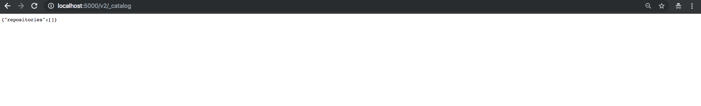

Environment Preparation¶
In this section, you will be deploying all of the DevOps tools that we will be using throughout this tutorial. The following table lists each tool that will be used and their general purpose.
| Tool | Description |
|---|---|
| (Insecure) Docker Registry | Container Image Registry used to store and retrieve Docker images |
| Jenkins | An open-source CI/CD server used to execute the pipeline |
| SonarQube Server | A static code analysis tool used to scan code for potential security vulnerabilities, bugs, and code smells |
Note
The tools that we will be utilizing throughout this tutorial are not fully secure or highly available and thus not production-ready. Their configuration in this lab is meant strictly for local development to try out SDP.
Step 1: Register The Insecure Docker Registry¶
To push and pull images from the local registry to be deployed, you’ll need to register it as
an insecure registry on your machine. Modify your docker preferences to add
0.0.0.0:5000 as an insecure registry.
Follow the instructions under the section labeled “Deploy a plain HTTP registry” found here.
Note
The URL of the Docker registry should not be preceded by http:// when
being added to the list of insecure registries.
Make sure to apply the changes and restart your docker daemon in order for these changes to take effect.
Step 2: Clone the Learning Labs Repository Application¶
To begin, clone our SDP Learning Labs GitHub repository, which includes all of the files you’ll need to use throughout this lab.
## cloning via ssh
git clone git@github.com:boozallen/sdp-labs.git
## cloning via https
git clone https://github.com/boozallen/sdp-labs.git
In your terminal, navigate to the sdp-labs directory that you just cloned from GitHub.
Step 3: Deploy The Tools¶
We’ll be using docker compose to deploy these tools locally.
Run the following command in your terminal from the root directory of the sdp-labs repository
to deploy the Docker containers using the provided docker-compose.yaml file within the try-it-out
directory.
docker-compose -f ./try-it-out/docker-compose.yaml up --build -d --scale sonar-scanner=0
Note
The docker-compose command run above may not work on Booz Allen’s WiFi depending on its
firewall settings, so you may need to run it on a private network or where firewall rules are more lax.
The above command will create and run the following Docker containers: Jenkins, a Docker registry, and SonarQube.
Step 4: Validate the Deployment¶
Let’s verify that each tool was successfully deployed.
Docker Registry
Navigate here.You should see the following screen:
Jenkins
Navigate here.You should see the following screen:
SonarQube Server
Navigate here.You should see the following screen:
Important
If any of these services are not working as expected you can check out the troubleshooting page for common problems and their fixes.